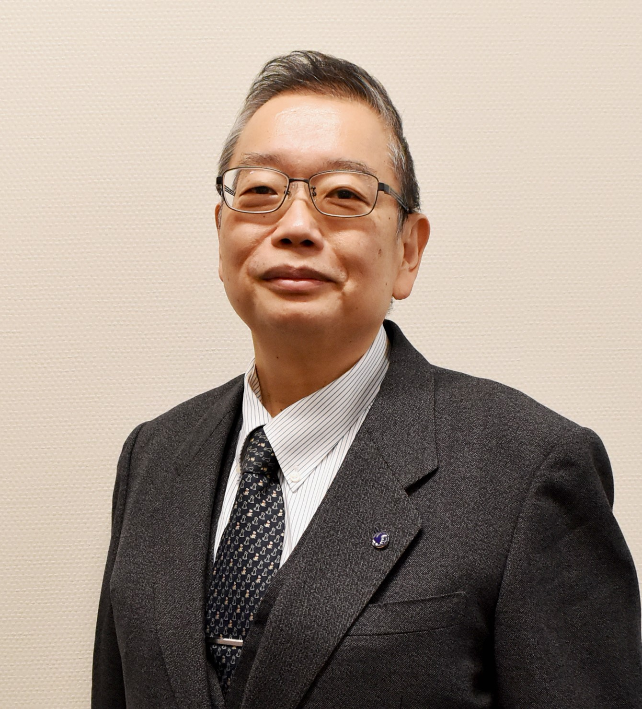

Tentative Program
Note: All the times listed below are in UTC+8
Tuesday, August 23, 2022
| 08:45 - 09:00 | Opening |
| 09:00 - 10:00 | Keynote 1 |
| 10:00 - 10:30 | Break |
| 10:30 - 12:00 | Session 1: Best Paper Candidates |
| 12:00 - 13:30 | Lunch |
| 13:30 - 15:00 | Session 2: Emerging and Hybrid Memory |
| 15:00 - 17:00 | Break |
| 17:30 - | Welcome Reception |
Wednesday, August 24, 2022
| 10:00 - 10:40 | Keynote 2 |
| 10:40 - 10:50 | Break |
| 10:50 - 11:30 | Keynote 3 |
| 11:30 - 13:45 | Banquet |
| 13:45 - 15:15 | Session 3 SW Issues for NVM |
| 15:15 - 15:30 | Break |
| 15:30 - 17:00 | Session 4: Solid-State Drive |
Thursday, August 25, 2022 (fully online)
| 10:30 - 12:00 | Session 5: Invited Session |
Live Keynote 1 (Aug. 23, 09:00 ~ 10:00 UTC+8)
Title: TBD Speaker: TBD Abstract: TBD Biography: TBD Moderator: TBD
Live Keynote 2 (Aug. 24, 10:00 ~ 10:40 UTC+8)
Title: TBD Speaker: TBD Abstract: TBD Biography: TBD Moderator: TBD
Live Keynote 3 (Aug. 24, 10:50 ~ 11:30 UTC+8)
Title: TBD Speaker: TBD Abstract: TBD Biography: TBD Moderator: TBD
Session 1: Best Paper Candidate
Session Chair: TBD
- Efficient and Atomic-Durable Persistent Memory through In-PM Hybrid Logging.
Nai-Jia Dong (National Taiwan University), Hsiang-Yun Cheng (Academia Sinica), Chia-Lin Yang (National Taiwan University), Bo-Rong Lin (Macronix International Co., Ltd.) and Hsiang-Pang Li (Macronix International Co., Ltd.) - Buffered Hash Table: Leveraging DRAM to Enhance Hash Indexes in the Persistent Memory.
Chen Zhong (University of Texas, Arlington), Prajwal Challa (University of Texas, Arlington), Xingsheng Zhao (University of Texas, Arlington) and Song Jiang (University of Texas, Arlington) - HNFFS: Revisiting the NOR Flash File System.
Yanqi Pan, Zhisheng Hu, Nan Zhang, Hao Hu, Wen Xia, Zhongming Jiang (Harbin institute of Technology, Shenzhen), Liang Shi (East China Normal University, Shanghai) and Shiyi Li ((Harbin institute of Technology, Shenzhen)
Session 2: Emerging and Hybrid Memory
Session Chair: Yi-Jung Chen (National Chi Nan University)
- Minimizing Age-of-Information of NVRAM-based Intermittent Systems.
Hung-Yu Lin (National Tsing Hua University), Yu-Pei Liang (National Chung Cheng University), Shuo-Han Chen (National Taipei University of Technology), Yuan-Hao Chang (Institute of Information Science, Academia Sinica), Tseng-Yi Chen (National Central University) and Wei-Kuan Shih (National Tsing-Hua University) - RNA-seq Quantification on Processing in memory Architecture: Observation and Characterization.
Liang-Chi Chen (National Cheng Kung University), Shu-Qi Yu (Institute of Information Science, Academia Sinica), Chien-Chung Ho (National Cheng Kung University), Yuan-Hao Chang (Institute of Information Science, Academia Sinica), Da-Wei Chang (National Cheng Kung University), Wei-Chen Wang (National Taiwan University) and Yu-Ming Chang (Wolley, Inc.) - Latency Aware Page Migration for Read Performance Optimization on Hybrid SSDs.
Shicheng Li, Longfei Luo, Yina Lv and Liang Shi (East China Normal University)
Session 3: SW Issues for NVM (Invited Session I)
Session Chair: Jongmoo Choi (Dankook University)
- Polling Based Per-core Workqueue Management in XFS Journaling.
Kwangwon Min (Korea Advanced Institute of Science and Technology, Korea) - DeNOVA: Deduplication Extended NOVA File System.
Youngjae Kim (Sogang University) - A Read Performance Analysis with Storage Hierarchy in Key-Value Store.
Seehwan Yoo (Dankook University)
Session 4: Solid-State Drives
Session Chair: Yu-Pei Liang (National Chung Cheng University)
- An Integrated Subpage-aware Write Method in Large-Page-based SSDs.
Chin-Hsien Wu and Chian-Shiang Ou Yang (National Taiwan University of Science and Technology) - Nimble Mapping SSD: Leaning State Mapping Strategy to Increase Reliability of 3D TLC Charge-Trap NAND Flash Memory.
Chih-Chia Chen and Jen-Wei Hsieh (National Taiwan University of Science and Technology) - RUSM: Harnessing Unused Resources in 3D NAND SSD to Enhance Reading Performance.
Hasan Alhasan, Yun-Chih Chen (National Taiwan University), Chien-Chung Ho (National Cheng Kung University ) and Tei-Wei Kuo (Academia Sinica & National Taiwan University)
Session 5: Academic Research Centers of Excellence on Semiconductor in Japan (Invited Session)
Session Chair: Hiroshi Nakamura (The University of Tokyo) Description: In Japan, semiconductor R&D (research and development), including design, device, and process, is attracting a great deal of attention. In this session, distinguished professors from three academic research centers will be invited to introduce their activities, focusing on their unique and advanced achievements. These three centers were recently selected as the core centers for the creation of next-generation semiconductor "X-nics" promoted by the Ministry of Education, Culture, Sports, Science and Technology (MEXT). X-nics is a neologism meaning crossing (X-ing) or synergizing new designs, devices and processes. These presentations also briefly touch on the X-nics activity plan.
- Recent progresses in Spintronics based Low Power LSIs for Carbon-neutral Society -- from STT/SOT-MRAM to AI/IoT Processor.
Tetsuo Endoh (Tohoku University)
 - Agile-X: Platform for semiconductor integrated circuits design and fabrication democratization.
Makoto Ikeda (The University of Tokyo)
- Discussion on 2D-fabric LSIs with NVM for future green society.
Hitoshi Wakabayashi (Tokyo Institute of Technology)